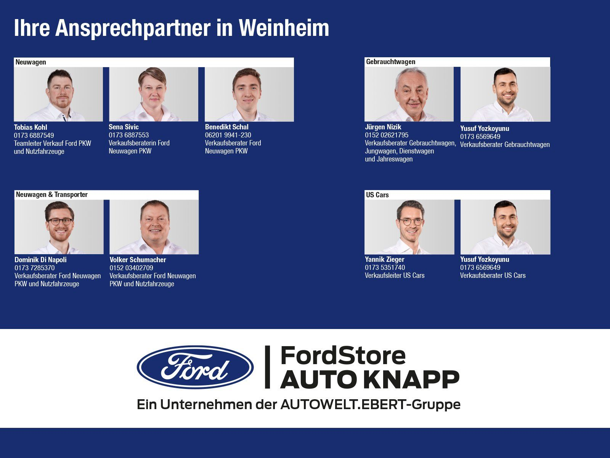

Ford Explorer 3.0 EcoBoost Plug-in-Hybrid ST-Line
44990 PLN
Weinheim
57.453 km
- Fahrzeug-Nr. für Kundenanfragen: 18098
*ehem. brutto Listen Neupreis zum Zeitpunkt der Auslieferung 76.000,- EUR.
*Sie sparen 41% (31.010,- EUR)
Standort des Fahrzeugs:
Weinheim · Viernheimer Str. 61 · Tel. 06201/9941-0
Aufenthaltsort des Fahrzeugs:
AK Weinheim Viernheimer Str. 86
- Carbonized Gray/Asher Gray
Sicherheit
- Scheinwerfer LED
- Fahrassistenz-System: Totwinkel-Assistent, Cross Traffic Alert und Notbremsfunktion
- Fahrassistenz-System: Fernlichtassistent (Scheinwerfer mit Abblendautomatik)
- Reifendruck-Kontrollsystem
- Fahrassistenz-System: Fahrspur-Pilot
- Intelligenter Geschwindigkeits-Begrenzer
- Power KeyFree-Startfunktion
- Diebstahl-Warnanlage
- Fahrassistenz-System: Pre-Collision-System
- Scheinwerfer-Assistent mit Tag-/Nachtsensor
- Tagfahrlicht LED
- Elektron. Stabilitäts-Programm (ESP)
- Allradantrieb
Komfort
- Sitzheizung hinten
- Sitze vorn klimatisiert
- Parkpilotsystem vorn und hinten
- Adaptive Geschwindigkeits-Regelanlage mit Stop&Go-Funktion
- Klimaautomatik 2-Zonen
- Fahrassistenz-System: Verkehrsschildassistent
- Kofferraumdeckel / Heckklappe elektr. betätigt (ßffnung, sensorgesteuert)
- Servolenkung elektrisch
- Fahrassistenz-System: Berganfahr-Assistent (Hill-Holder)
- Beheizbare Frontscheibe
- Beheizbares Lenkrad
- Touchscreen
- Elektr. Seitenspiegel anklappbar
- Fensterheber elektrisch vorn + hinten
- Multifunktionslenkrad
- Blinkleuchte in Außenspiegel integriert
- Sitz vorn links elektr. verstellbar (10-fach, mit Memory)
- 3.Sitzreihe, Einzelsitze elektr. klappbar (2 Sitzplätze)
- Zentralverriegelung mit Fernbedienung
Sportive
- Sportsitze vorn
- Sport-Fahrwerk
- Sportpaket
Media
- Ford SYNC 3 mit Navigation
- Android Auto
- CarPlay
- Radio DAB
- Sprachsteuerung
- USB
- W-Lan / Wifi Hotspot
- Bluetooth
- Freisprecheinrichtung
Technik
- Getriebe Automatik - Typ: 10R80 (10-Stufen)
- Fahrassistenz-System: aktiver Park-Assistent Plus, Ein- und Auspark-Funktion und teilautomatisierter Fahrzeugführung
- Rückfahrkamera mit Split View
- Frontkamera mit Split View
- Einparkhilfe Sensoren hinten
- Einparkhilfe Sensoren vorne
- Scheibenwischer mit Regensensor
- Start/Stop-Anlage
- Bordcomputer
- Umweltplakette (grün)
Interieur
- Panorama-Schiebedach elektr. mit Solar-Reflect
- Mittelkonsole mit Armlehne
- Sitzbelüftung
- Lederlenkrad
- Isofix-Aufnahmen für Kindersitz
Exterieur
- LM-Felgen 8x20 (5x2-Speichen, glanzgedreht)
- Abgedunkelte Scheiben
- Nebelscheinwerfer LED
- Dachreling schwarz
Sonstiges
- Lenkrad mit Schaltwippen
- Winterpaket
Keine Haftung für Druck- u. Schreibfehler
Irrtum und Zwischenverkauf vorbehalten
